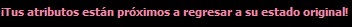
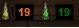

Los atributos o "dados" se generan aleatoriamente al tirar dados en la pantalla de creación personaje. Estos atributos son los que determinan qué tan bueno es el personaje, por lo tanto si tiene puntos bajos va a ser débil, mientras que con puntos mayores, será mucho más fuerte.
A continuación detallamos los tipos de atributos:
| Fuerza |
Determina la potencia física del personaje, su poderío muscular y óseo. Tiene relación directa con el daño que el mismo es capaz de inflingir.
Este atributo podrá aumentarse temporalmente recibiendo hechizo "Fuerza" o tomando "Pociones Verdes" hasta llegar al doble pero nunca podrá pasar el límite máximo de 40. |
|
| Agilidad |
Representa la destreza y reflejos del personaje. Es de gran influencia en combate cuerpo a cuerpo o con armas de rango pues determina la posibilidad de esquivar o acertar golpes.
Este atributo podrá aumentarse temporalmente recibiendo hechizo "Celeridad" o tomando "Pociones Amarillas" hasta llegar al doble pero nunca podrá pasar el límite máximo de 40. |
|
| Inteligencia |
Representa los puntos de maná del personaje, de este atributo dependerá la cantidad de puntos de maná que obtendrá al subir de nivel. |
|
| Carisma |
Sirve para domar animales. |
|
| Constitución |
Representa los puntos de vida del personaje, de este atributo dependerá la cantidad de puntos de vida que obtendrá al subir de nivel. |
Aviso en los indicadores de Fuerza y Agilidad
Los indicadores tienen un alerta visual (en los mismos indicadores y en la consola) a pocos segundos de finalizarse los efectos. Al utilizar una poción amarilla o verde, o los hechizo Celeridad o Fuerza, el alerta se detiene. Si el usuario no lo hace, al concluir el tiempo la alerta se detiene y los valores de agilidad y fuerza vuelven a los naturales del personaje.


|
|